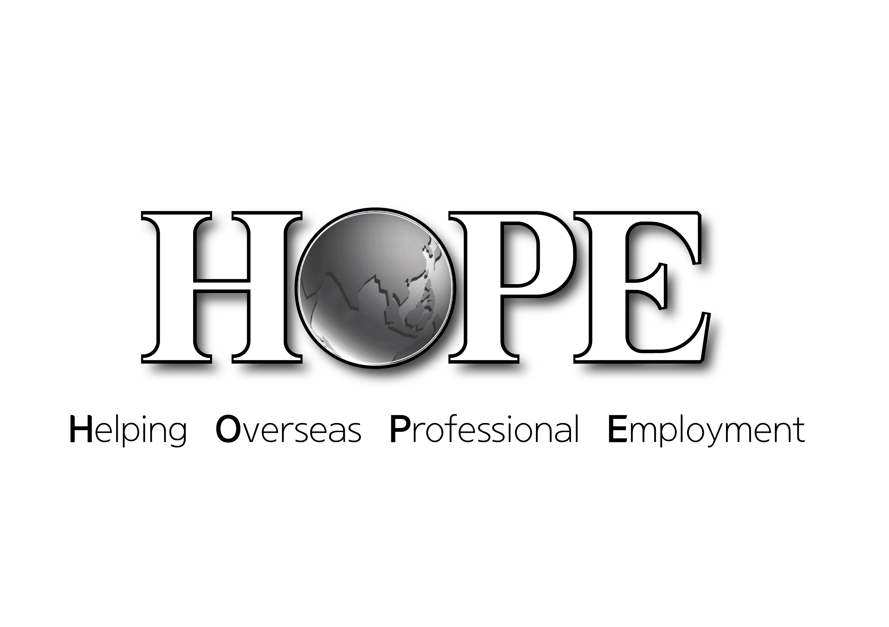

오늘날 지구상에는 6,500여개의 미전도종족이 있으며, 전세계 인구의 30억은 복음을 전혀 들어본 적이 없는 사람들입니다. 그들은 복음을 듣기에 가장 어려운 지역에 살고 있고 지리적으로 멀거나 격리되어 있으며 언어적 문화적 장벽이 있습니다.
뿐만 아니라 복음 전도와 교회 활동을 금지하고 있으며, 선교사 입국을 거부합니다. 이런 지역을 ‘창의적 접근지역’, 혹은 ‘선교제한 지역’이라고 부르는데, 주로 공산권과 이슬람권, 유대권이 이에 해당합니다. HOPE(전문인협력기구)는 창의적 접근지역에 복음을 전하기 위해 1989년 2월 14일, GMF(한국해외선교회) 내에 설립되었습니다.
1991년에 이슬람권과 중국에 파송을 시작하였고, 현재 이슬람권 및 공산권 국가 24국에서 209명의 선교사가 활동하고 있습니다
HOPE는 선교사로 입국할 수 없는 창의적 접근지역에 목회자와 평신도 전문인선교사를 파송하고 있습니다.
대부분 복음전도가 금지되어 있는 지역이기 때문에 비즈니스, 지역사회개발, 의료, 스포츠, 교수 사역 등의 전문인 사역으로 삶을 통해 복음의 문을 열고 궁극적으로 교회개척과 제자훈련을 목표로 사역하고 있습니다.
